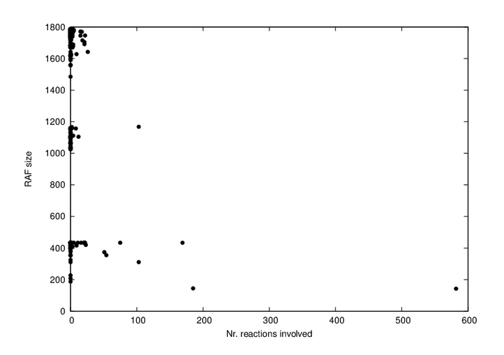

Evolution of the Cell
WIP
In a far-from-equilibrium system1 such as the Earth, there is constant activity. At some point, if there is water and complex chemicals, autocatalytic reactions will occur. These are stable loops of chemicals which influence their environment such that their own presence is more likely. Autocatalytic cycles are a process, so a constant flow of energy is required at the very least to produce motion. There need to be molecules present that can change their structure or combine with one another (chemical substrate). And for it to be an autocatalytic process, some of the molecules produces need to either organize more substrate, or increase the rate of the reactions (catalysis), or in some other way encourage the set of chemicals to perform the reaction.[Semenov et al. (2016)](Despons, Decker, and Lacoste 2023)(Ottelé et al. 2019)2
The first autocatalytic cycles were probably very simple, slow and distributed. They may have been as simple as a single molecule that could catalyze its own production. The number of these molecules would increase over time, until they became concentrated enough to form more active loops. Initially, there would simply be the presence in some region of some increasing number of these autocataltyic sets. What persists exists.
Catalysis is a funny word. If you get down to the electrochemistry of it, it can refer to a few different ways of arranging molecules relative to one another, and bending them or massaging their electron cloud or introducing intermediate molecules, such that they form bonds. But this process is facilitated at larger and larger scales by collections of proteins that chaperone or form scaffolding and pathways that make sure that the right chemicals get to the right enzyme at the right moment. Perhaps the largest chaperone structure is the cell wall. It collects a group of molecules together and makes all the rest of the organizing easier.
So, the autocatalytic sets, they eventually organize into vesicles. At this point, perhaps we have moved on to autopoesis: “a system capable of producing and maintaining itself by creating its own parts”.3 These vesicles can perhaps be best understood as maintaining a state of steady flow or ‘homeorhesis’4. As long as the environment remains steady, autocatalysis can continue apace. However, the environment never remains steady. Change is the rule of life. The environment changes regularly daily and yearly, and on other scales chaotically as the different fluid systems of the planet throw up extreme events.
To handle the different short-term stable conditions, a system that wants to maintain optimal flow will maintain many different chemical pathways and set up feedback loops from external cues. Now we are heading closes to ‘allostasis’, the ability to anticipate and adjust energy flows according to environmental and internal requirements. The fact that the proto-cell will need to maintain different loops that are sometimes dormant and sometimes active, and which are partially overlapping, implies the need for compression. Inasmuch as it can, it will reuse components and find autopoetic processes that can handle multiple different configurations, and can switch between them easily.
This implies a search process over chemicals that is looking for configurable subspaces. Peptides in general are highly configurable, so proto-cells that utilize them often can more efficiently support many different morphologies and sets of autopoetic processes. Some peptides are exceptionally configurable, seen from our vantage point seem to be perfect as carriers of information– RNA for example. This peptide is utilized to create switches and a control network over the pathways that are present in the cell (Hordijk, n.d.).

Over time, this strategy of compressing different morphologies and processes into a single set of chemicals becomes more and more efficient, and more and more dense. The number of different processes the system can handle increases. DNA is created to provide longer-term storage of patterns. Because of the density with which you can store overlapping patterns using these combined information molecules, the cell can now store orders of magnitude more information than it could in activity alone. It can store the patterns for radically different morphologies.
Once DNA has been invented, Darwinian evolution can begin. This disctinction is widely considered significant, because it is seen as a seperation between the information/inheritable part of the cell and the dynamic part. However, I’m not so convinced– and it seems there are others who feel the same way5. Making the distinction between information and process is clearly significant, but autocatalytic sets are an inheritance of their own– ‘what persists exists’. As long as some assemblage of these ASs is running and copying itself, it has heritable information– the process is the information.
Lets introduce some new terminology.
- x-instant (autocatalytic-circuit-instant): an abstract frozen representation (an information-structure analogue of) a dynamic process (such as the DNA patterns that store a specific autocatalytic circuit)
- x-instance (autocatalytic-circuit-instance): an instantiation of such a process in matter (such as the set of proteins and chemicals that forms a specific instantiation of an autocataltyic circuit)
Before information molecules, ac-instances were the only way to store information. The information was embedded in the process itself. After the development of information molecules, the ac-instances could be stored as ac-instants in the information molecules, and only a subset of all the possible ACs that could be instantiated by the cell were actually present as processes. Of course, there is some minimal viable set of autocatalytic processes that must remain active at all times to maintain the DNA and the transcription apparatus. Otherwise ‘the cell is dead’– inasmuch as the cell is now defined by this relationship betweeen ac-instants and ac-instances6. However, it is quite possible for the cell to shed small vesicles and other autocatalytically active (autopoetic, homeorhetic) entities, that don’t have DNA. The red blood cell is perhaps the most impressive example, and viruses would be another. But in fact, cells in all environments manage autocatalytic circuits in their environment, both individually and collectively. Many of the messages that cells pass to one another take the form of autocatalytic circuits, packaged somehow and sent off into the intercellular matrix. So, even the idea that the ACs that the cell has to instantiate are overdetermined by the need to maintain DNA is false. The cell can send of little ACs into the unknown with no information molecules to guide them if it so wishes.
References
Footnotes
A system is far from equilibrium if there are energy flows that keep it from reaching a steady state (equilibrium). On Earth for example, the following sources of energy drive life processes: solar radiation, geothermal energy, kinetic energy of the Earth, kinetic energy of the moon, abundant chemical isotopes and complex molecules.(Eigen and Schuster 2004)↩︎
A cluster of references at the end of a paragraph like this is normally just the most interesting results that I found when doing an exa search for the contants of the paragraph. This means I haven’t necessarily read all of them– I intend to integrate them into the text properly if and when I understand them well enough.↩︎
Autopoesis is a term coined by Humberto Maturana and Francisco Varela in 1972. It is a portmanteau of the Greek words for self (auto) and creation (poiesis).↩︎
As opposed to ‘homeostasis’, a word which belies the fact that the system is not in a steady state, but is constantly changing.↩︎
“In this paper, we propose that Darwinian evolution is not a discretely delimited mechanism of change but one member of a broader class of autocatalytic chemical ecosystem (ACE) processes. ACE processes are characterized by self-amplifying subsystems called autocatalytic cycles (ACs) that include not only the life cycles of genes and organisms but also motifs that are abundant within abiotic chemical reaction networks. Importantly, because ACs tend to persist once activated (given sufficient flux of food/energy), they serve as a basic unit of memory or inheritance. It can be shown that superficially different ACEs, for example cells, ecosystems and certain localized chemical reaction systems, can all be described using the same formalism” (Baum et al. 2023).↩︎
This is also known as ‘the central dogma of molecular biology’.↩︎